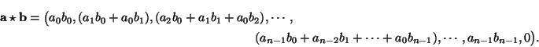
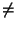
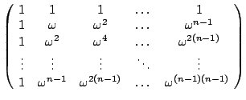
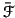

Q 6.3
Let
a = (
a0,
a1,...,
an - 1, 0,..., 0) and
b = (
b0,
b1,...,
bn - 1, 0,..., 0) be points in

Show that

Deduce that if
a and
b are the coefficients of polynomials
p(
x) and
q(
x) respectively, as in Equation
6.1 then
p(
x)
q(
x) has coefficients
ab.
Q 6.5
One way to look at the Fourier transform of a polynomial, considered
as a point in

, is in terms of evaluation of the polynomial at a
fixed set of
n fixed points. Verify this, and determine the fixed
set of points.
Q 6.6
Let
zn = 1, and assume that
z  1. Verify that
1 + z + z2 + ... + zn - 1 = 0.
Let

= exp(- 2
 i
i/
n). Verify that for any
integer
n
1, the Fourier matrix
 n
n defined by
 n
n =


has inverse

n, the complex conjugate of
n.
Explain how this fact can be used to derive an algorithm which takes
time
O(n log n) to multiply two polynomials of degree n. You are
not required to prove anything but you should ensure that your notation
is defined and that results you use, such as the convolution theorem,
are clearly stated.